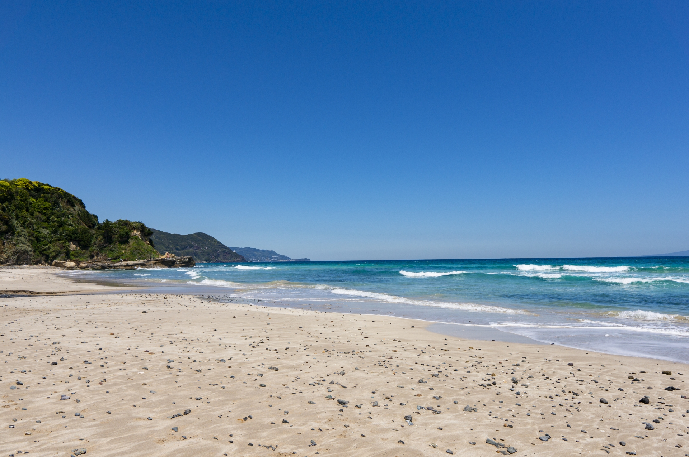
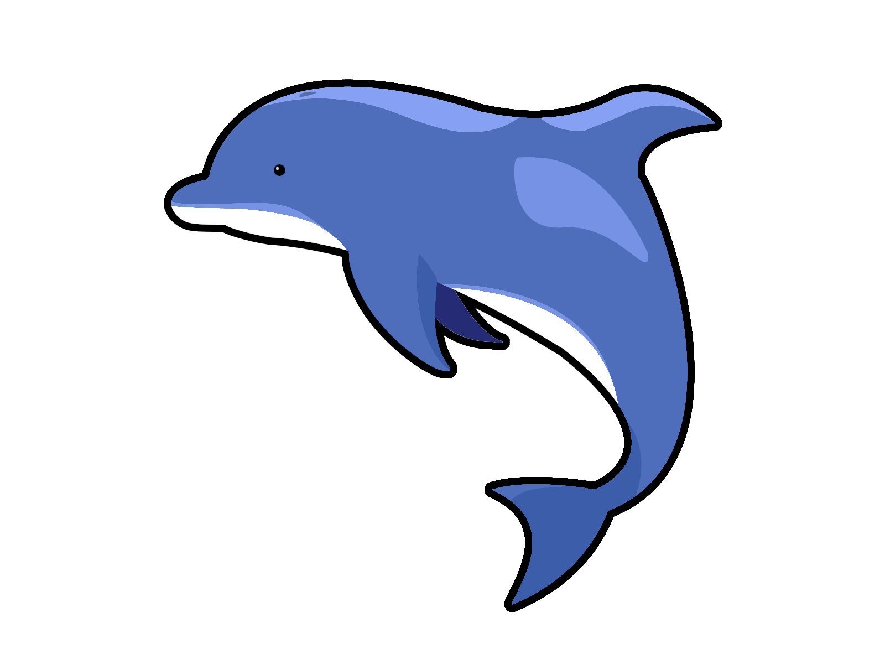
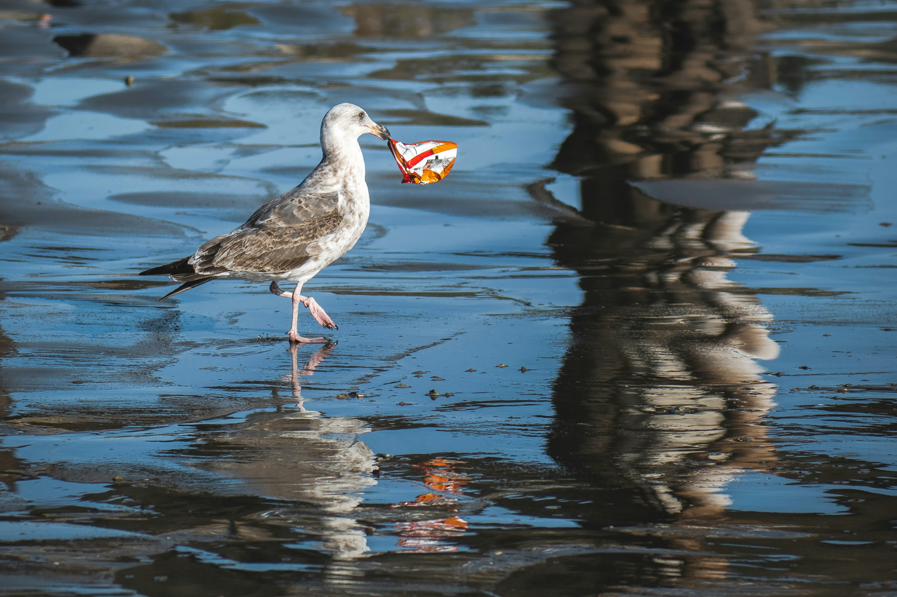
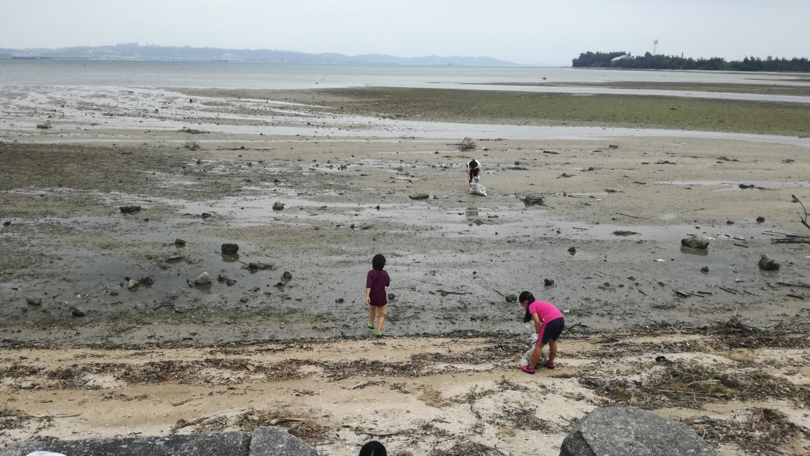
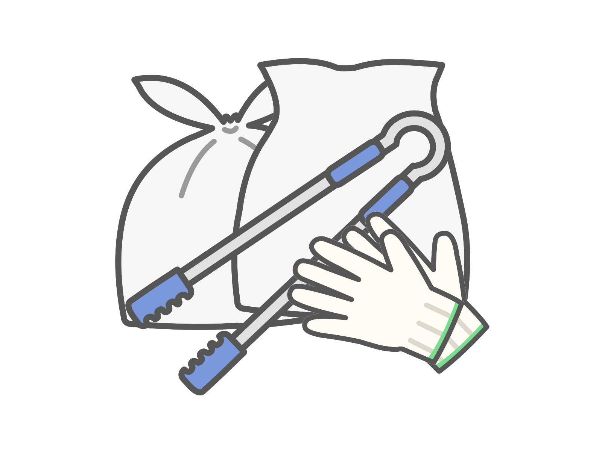

海を守ろう！！

海でのできごと
みなさんは海が好きですか？
じつはいま、海がとても汚れてしまっています。
なぜかというと、生活のなかで発生するペットボトルやビニール袋など、
プラスチックごみが海に捨てられてしまっているからです。
それによって、鳥や魚など海のいきものが苦しんでいます。


地球を守るためにできること
みなさんの好きな海にいけなくなってしまうのは悲しいですよね。
そうならないために、海のごみをなくすことで海と地球を助けることができます。

そこで、みなさんに「ビーチクリーン」に参加してもらいたいと思っています。
ビーチクリーンは、みんなで力を合わせて海岸のごみを拾う活動です。
この活動を通じて、海や海の生き物を守ることができます。
そして、ごみを拾うことで海がどれだけきれいになるかを実感することができますよ！
ビーチクリーンは楽しいだけでなく、海のことをもっと知る良い機会でもあります。
家族や友達と一緒に参加して、海の環境を守るヒーローになりましょう！
みんなの力が集まれば、もっと素敵な海を取り戻すことができますよ！
